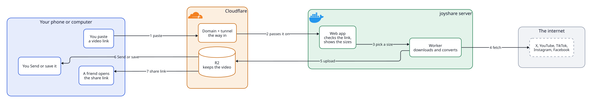
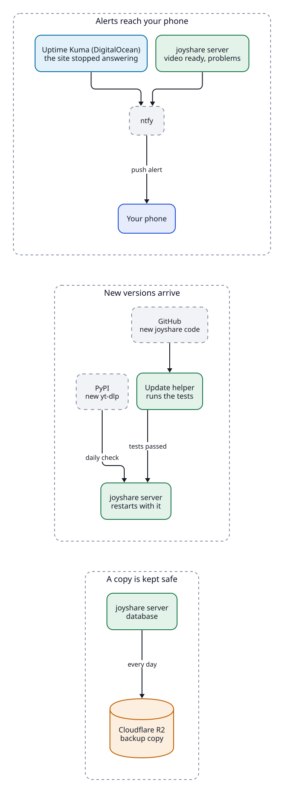

How a video link becomes something you can send, where each part runs, how the parts connect, and how long everything is kept.
The process
What happens from the moment you paste a link.
1
Paste or share
A link from X, YouTube, TikTok, Instagram or Facebook. Home-screen app or iOS Shortcut. Face ID unlocks it.
2
Inspect
yt-dlp reads title, author and length, then estimates size per preset. Over 200 MB is refused.
3
Process
The worker downloads and, only if needed, converts to H.264 MP4 or M4A audio. A 3D scene shows live progress.
4
Adjust
See the real size. Make it smaller or sharper from the cached original, or cut just a clip.
5
Send
Share sheet to WhatsApp or iMessage, Download, or a 48-hour link for friends.
Where things run
The app runs on your joyshare server, wherever that is. Cloudflare is the front door. A small cloud server watches from outside.
Your devices
iPhone, Mac, any browser
Home-screen app (PWA)
Passkey sign-in
ntfy app for alerts
Cloudflare
Front door and storage
Your domain and DNS
Tunnel to the joyshare server
R2 bucket for videos and backup copies
Server
joyshare server
Any computer with Docker: a Mac, Linux, a Pi or a cloud server
Docker: web + admin, worker, cloudflared
SQLite + media in one data volume
Scheduler: cleanup, disk checks, daily yt-dlp update, platform checks and backups
Update helper: pulls new code from GitHub, tests it, restarts
DigitalOcean
Uptime Kuma
Checks the health page every minute
Also checks the worker is alive
Alerts through ntfy if the server goes quiet
How the parts connect
The numbered steps follow one video from your link to your friends. Videos never travel back through the tunnel: the worker puts each finished file in R2, and phones download it from there.
How a video gets to you

What keeps it running

How a share link delivers the video
The link and the viewer page are the same in both modes. Only where the video file comes from changes. It's one setting.
Mode A: from the server Available
Page and video
Phone→Server disk
For a server on your own network, or one with its own web server instead of the tunnel. Nothing extra to set up.
Mode B: from R2 In use
Viewer page
Phone→Cloudflare→Tunnel→joyshare server
Video file
Phone→R2 signed link
Video never passes through Cloudflare's regular proxy, so it stays inside their terms, and the server's own upload isn't used when friends watch.
How long things are kept
Drawn to scale over 48 hours.
Downloaded original
Finished MP4
Share link
Video details and logs
0 h1 h12 h24 h36 h48 h
Disk alert at 90% full. New jobs pause at 95%. Video details and logs are kept beyond 48 hours.
The stack, by layer
Interface
Plain HTML, CSS and JavaScriptThree.js progress scenes11 looks, English and SpanishHome-screen appSSE progress
Sign-in
PasskeysAdmin and member rolesDevice QR invitesShortcut tokensView as member
Admin
Stats and logsLimitsStorage switchUsers and devicesBackupsPlatform checksApp and yt-dlp updates
App
Python + FastAPIWorker processyt-dlpffmpeg
Data
SQLite (WAL)Docker data volumeCloudflare R2
Network
Cloudflare DNSCloudflare Tunnel
Run
Docker ComposeMac, Linux, Pi or cloud serverUpdates itself from GitHub
Watch
ntfy alertsUptime Kuma on DigitalOceanDaily backup to R2Daily platform checks